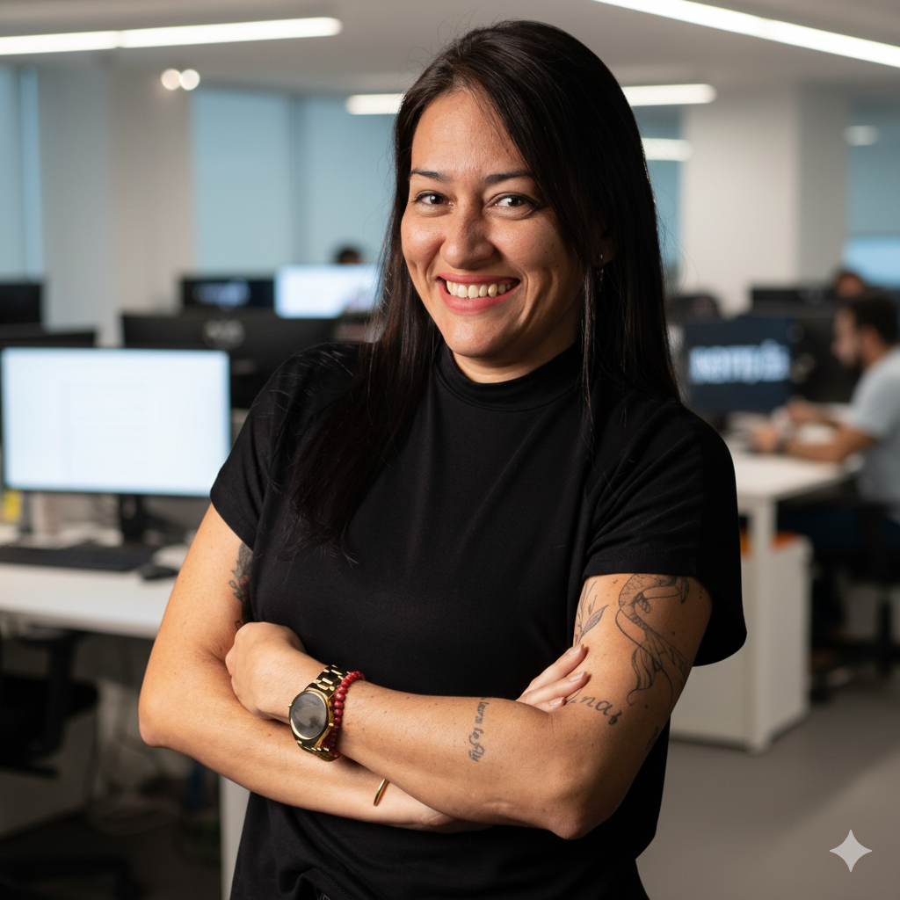

Assessora de Imprensa | Social Media | Gestão de Imagem

Sou jornalista com experiência em assessoria de imprensa, comunicação institucional e mídias digitais. Ao longo da minha trajetória, atuei na produção de textos, relacionamento com a imprensa, acompanhamento de pautas, gestão de imagem e apoio a estratégias de comunicação. Já passei por empresas como a Midiaclip e a Produtora Arroz de Hauçá, sempre com foco em uma comunicação clara, responsável e alinhada aos objetivos de cada projeto.
Assessoria
Comunicação
Conteúdo
Gestão de Crise
Assessora de Imprensa: Media training e gestão de crises.
Repórter e redação.
Assistente de Produção.
Estagiária: Releases e clipping.
Estagiária: Pesquisa analítica.
Gestão estratégica de imagem e relacionamento com veículos de comunicação.
Inteligência aplicada a campanhas e monitoramento de reputação.
Desenvolvimento de narrativas digitais com foco em autoridade e alcance.
Prevenção e resposta rápida para proteção de ativos reputacionais.

Estratégias de clipping para candidatos majoritários em Salvador.

Desenvolvimento de press kits e media training para produções.

Gestão completa de conteúdo do guia cultural referência na Bahia.
O artista baiano concorre em três categorias. Álbum “Caminhos” com direção de Cristovão Bastos.
Escrito por Ana Paula Maquiné
Faixa “Seus Olhos” do álbum “Caminhos” ganha clipe intimista com direção artística de Cristovão Bastos.
Assessoria: Ana Paula Maquiné
Vamos conversar e transformar sua visibilidade em autoridade.
Vamos conversar no WhatsApp